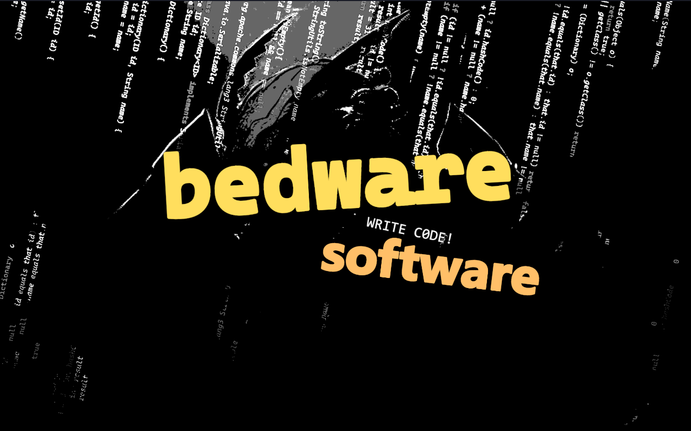
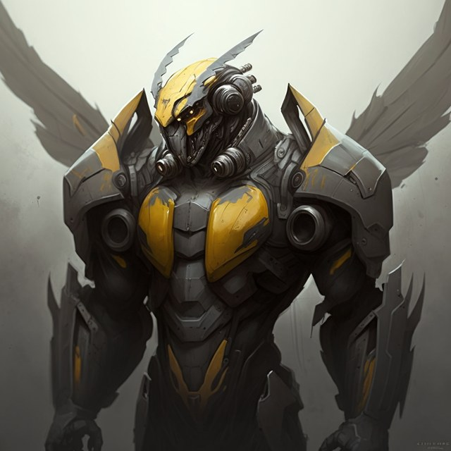

Основа бренда bedware software
и каталог того, что уже есть
Настроение и цвета — из логотипа и робота. Форма и поведение компонентов — из Runwa и Vimperium, где они отлажены. Здесь всё показано рядом, чтобы выбирать глазами, а не вслепую.
Выбирайте варианты прямо на странице (жёлтые переключатели) — внизу кнопка «Скопировать решения», результат можно вставить в чат. Рекомендации помечены совет, но решения ваши.

Палитра
Цвета сняты программно, по пикселям. В логотипе всего семь плоских цветов — без градиентов, поэтому значения точные. У робота живописная фактура, поэтому его цвета — центры кластеров (усреднённые тона).
Что измерено в исходниках
Логотип и вариации — точные значения
Жёлтый — #FFDE5D, а не #FFDD55; персиковый — #FFBF68, а не #FFBB66. Одинаково во всех пяти файлах. Серые #666/#999/#333 — тона силуэта и «дальние» строки кода.
Робот — центры кластеров

Жёлтый робота темнее и грязнее логотипного (#EAD075 в свету, #B7974E в массе). В интерфейс он идёт только как «тень пластины», основной жёлтый — логотипный.
Предлагаемая палитра (тёмная тема — основная)
Клик по образцу копирует значение. Серые слегка утеплены в сторону брони робота, чтобы рядом с жёлтым не выглядели синеватыми; чистый нейтральный вариант — вопрос в разделе 7.
Контраст текста (WCAG 2.1)
Считается на странице из тех же переменных. Норма: 4.5 для обычного текста, 3.0 для крупного (от 24px) и для границ элементов управления.
Шрифты
Шрифт логотипа — Menlo Bold (системный моноширинный macOS; его свободный «родитель» — DejaVu Sans Mono Bold, рисунок букв практически тот же). Скруглённым и «толстым» слово стало не из-за шрифта, а из-за обводки тем же цветом со скруглёнными стыками — около 3% кегля в каждую сторону, плюс лёгкая разрядка букв (2%). Подпись «WRITE C0DE!» — Menlo Regular (перечёркнутый ноль — его примета), «дождь» кода — Menlo Bold Italic.
Уверенность: высокая, ~90%. Проверено наложением: ниже слева — вырезки из ваших файлов, справа — то же слово, собранное из контуров Menlo Bold с обводкой. Совпадают хвост «y», двухэтажная «a», одноэтажная «g», засечка у «r», ширина букв. Оставшиеся 10% — на то, что исходник мог быть DejaVu Sans Mono (отличается в основном нулём) и что точная толщина обводки подобрана на глаз.
Слово бренда: три варианта шрифта
Все три — тот же приём: жирный моноширинный + круглая обводка + наклон. Menlo нельзя раздавать с сайта (лицензия Apple), поэтому для сайта нужен свободный шрифт или логотип картинкой/SVG в кривых.
совет: A — это буквально ваш логотип, лицензия свободная, есть кириллица.
Шрифт текста интерфейса
Сейчас оба приложения используют системный шрифт (-apple-system, Segoe UI, Roboto), моноширинный — только в клавишах и коде. Настоящий выбор здесь один: обычный шрифт для текста или моноширинный везде.
совет: А — в приложениях всё отлажено под обычный шрифт, а характер бренда дают заголовки и метки.
Если гротеск — то какой
На Mac системный шрифт (SF Pro) и Inter почти близнецы — Inter и рисовали по его образцу, поэтому в прошлой версии страницы разницы не было видно. Крупно она заметна в цифрах и в «1 I l». По-настоящему они расходятся на Windows: там «системный» — это Segoe UI, более округлый и широкий. То есть вопрос не про внешний вид на вашем Mac, а про то, должен ли интерфейс выглядеть одинаково на всех ОС.
совет: системный в приложениях, Inter на сайте
Четыре направления
Кнопка, поле ввода и панель в новой палитре. Размеры, отступы, скругления и анимации взяты из приложений как есть (откуда именно — подписано), меняется только цвет и то, как используется жёлтый. Состояния показаны статично все сразу; правая колонка в каждом блоке — живая, её можно трогать мышью и клавиатурой.
Какое направление берём? совет: D · Заливка + пластины
Каталог «рядом»: Runwa и Vimperium как есть
Каждая рамка ниже — настоящий CSS приложения: globals.css и классы Tailwind собраны прямо из исходников (исходники не тронуты), разметка перенесена из компонентов дословно, со ссылкой на файл. Это не перерисовка, а нынешний вид.
Расхождения и токены
Токены темы: что общее, что разошлось
Таблица расхождений — нужны ваши решения
По каждой строке выберите источник. «Ни тот, ни другой» значит, что я предложу третий вариант на следующем этапе.
Есть только в одном приложении
Claude Design
Что есть на вашем аккаунте
Проверено: доступны типы Design System, Design, Slides, Docs, Sheets, Data, Whiteboard. Дизайн-систем пока нет ни одной — создавать будем с нуля. Сейчас ничего не создано: ждём выбора направления.
Тип Design System хранит: README (бренд-бук), tokens.json (цвета по темам, шрифты и кегли, отступы, скругления, тени), компоненты с живыми превью, шрифты и ассеты (логотипы, робот). Его читают другие сессии Claude — в том числе когда делают макеты, слайды и сайт.
Как связать с кодом
Источник истины — репозиторий (этот, bedware-design): файл токенов + общий пакет компонентов. Из него в одну сторону собираются:
1. CSS-переменные / тема Tailwind 4 (@theme) для Runwa, Vimperium и сайта на Astro;
2. дизайн-система в Claude Design — командой /design-sync в Claude Code: она читает токены, компоненты и ассеты из репозитория и публикует их в Design System. Такая система помечается как «синхронизируется из кода» и в Claude Design открывается только для чтения, то есть разойтись с кодом не может.
Правка всегда идёт в коде → повторный /design-sync. Обратного пути (правка в Claude Design → код) в этом режиме нет, и это хорошо для «одного источника истины». Альтернатива — редактируемая вручную система без синхронизации; её не советую.